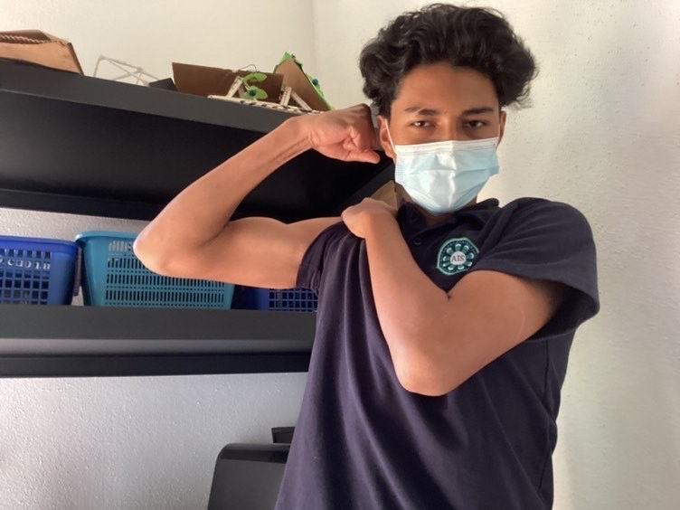

Adriana Mazariegos
Biografía de Kenneth Melendez
Kenneth Melendez nació el 21 de Octubre del 2006 en la Antigua Guatemala. Su sueño es ser un tenista profesional y adinerado. Hoy en día se dedica profundamente a entrenar y destacar. Además sus estudios son super importantes para el y se dedica profundamente a ellas con esfuerzo y dedicación.
Preguntas y Respuestas
| Colores Favoritos |
Animales Favoritos |
Artistas Favoritos |
| Blanco |
Pantera |
Lil Durk |
| Azul |
Tiburón |
Lil baby |
Información Extra
| Comida Favorita |
Libro Favorito |
Inspiración |
Película Favorita |
| Pizza |
El niño que quería volar |
Familia |
El Conjuro 2 |
Imágenes

Top 10 de Deportes Favoritos
- Tenis
- Futbol
- Natación
- Voleibol
- Ping-Pong